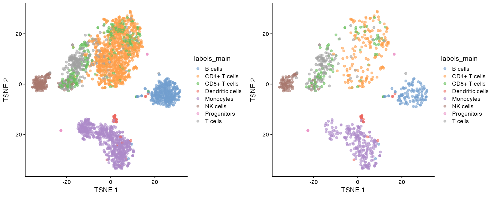
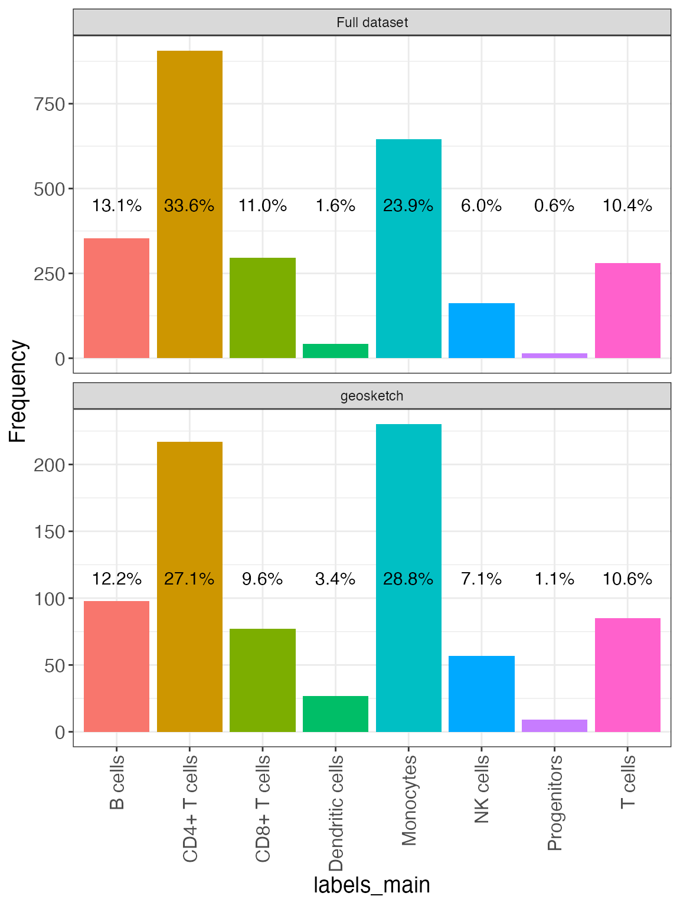
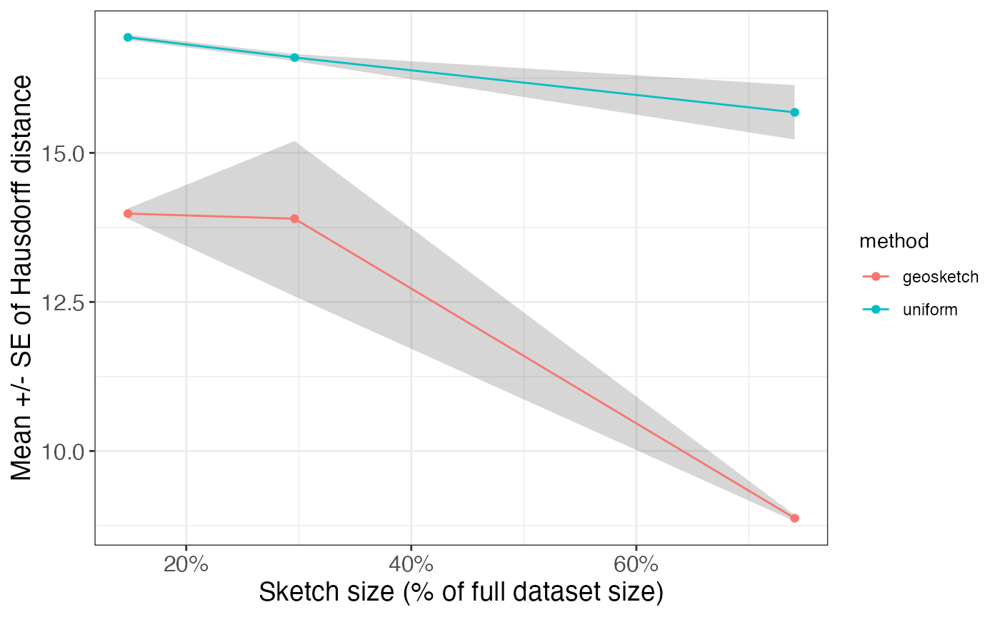

As the number of cells that are routinely interrogated in single-cell experiments increases rapidly and can easily reach hundreds of thousands, the computational resource requirements also grow larger. Several approaches have been proposed to either subsample or aggregate cells in order to reduce the size of the data and enable the application of standard analysis procedures. One such approach is geometric sketching - subsampling in a density-aware manner in such a way that densely populated regions of the gene expression space are subsampled more aggressively, while a larger fraction of cells are retained in sparsely populated regions. In addition to reducing the size of the data set, this often also increases the relative representation of rare cell types in the subsampled data set.
Several tools have been developed for applying sketching to
single-cell (or other) data sets, but not all of them are easily
applicable from R. The sketchR package implements an
R/Bioconductor interface to some of the most popular python packages for
geometric sketching, allowing them to be directly incorporated into
Bioconductor-based single-cell analysis workflows. The interaction with
python is managed using the basilisk package, which
automatically takes care of generating and activating a suitable conda
environment with the required packages.
This vignette showcases the main functionalities of the
sketchR package, and illustrates how it can be used to
generate a subsample of a dataset using the geometric
sketching/subsampling algorithms and implementations proposed by Hie et al. (2019) and Song et al. (2022), as well as create a set of
diagnostic plots.
sketchR can be installed from Bioconductor using the
following code:
if (!require("BiocManager", quietly = TRUE))
install.packages("BiocManager")
BiocManager::install("sketchR")We start by loading the required packages and preparing an example data set.
suppressPackageStartupMessages({
library(sketchR)
library(TENxPBMCData)
library(scuttle)
library(scater)
library(scrapper)
library(SingleR)
library(celldex)
library(cowplot)
library(SummarizedExperiment)
library(SingleCellExperiment)
library(beachmat.hdf5)
})We will use the PBMC3k data set from the TENxPBMCData Bioconductor package for illustration. The chunk below prepares the data set by calculating log-transformed normalized counts, finding highly variable genes, performing dimensionality reduction and predicting cell type labels using the SingleR package.
## Load data
pbmc3k <- TENxPBMCData(dataset = "pbmc3k")
#> see ?TENxPBMCData and browseVignettes('TENxPBMCData') for documentation
#> loading from cache
## Set row and column names
colnames(pbmc3k) <- paste0("Cell", seq_len(ncol(pbmc3k)))
rownames(pbmc3k) <- uniquifyFeatureNames(
ID = rowData(pbmc3k)$ENSEMBL_ID,
names = rowData(pbmc3k)$Symbol_TENx
)
## Normalize and log-transform counts
pbmc3k <- normalizeRnaCounts.se(pbmc3k, size.factors = NULL)
## Find highly variable genes
res <- modelGeneVariances(assay(pbmc3k, "logcounts"))
top_hvgs <- chooseHighlyVariableGenes(res$statistics$residuals, top = 2000)
## Perform dimensionality reduction
set.seed(100)
pbmc3k <- runPca.se(pbmc3k, features = top_hvgs, number = 30)
pbmc3k <- runTsne.se(pbmc3k, reddim.type = "PCA")
## Predict cell type labels
ref_monaco <- MonacoImmuneData()
pred_monaco_main <- SingleR(test = pbmc3k, ref = ref_monaco,
labels = ref_monaco$label.main)
pbmc3k$labels_main <- pred_monaco_main$labels
dim(pbmc3k)
#> [1] 32738 2700The geosketch() function performs geometric sketching by
calling the geosketch python package. The
output is a vector of indices that can be used to subset the full
dataset. The provided seed will be propagated to the python code to
achieve reproducibility.
idx800gs <- geosketch(reducedDim(pbmc3k, "PCA"),
N = 800, seed = 123)
head(idx800gs)
#> [1] 1 2 5 9 10 11
length(idx800gs)
#> [1] 800Similarly, the scsampler() function calls the
scSampler python package
to perform subsampling.
To illustrate the result of the subsampling, we plot the tSNE representation of the original data as well as the subset (using the tSNE coordinates derived from the full dataset).
plot_grid(
plotTSNE(pbmc3k, colour_by = "labels_main"),
plotTSNE(pbmc3k[, idx800gs], colour_by = "labels_main")
)
We can also illustrate the relative abundance of each cell type in the full data and in the subset, respectively.
compareCompositionPlot(colData(pbmc3k),
idx = list(geosketch = idx800gs),
column = "labels_main")
sketchR provides a convenient function to plot the
Hausdorff distance between the full dataset and the subsample, for a
range of sketch sizes (to make this plot reproducible, we use
set.seed before the call).
set.seed(123)
hausdorffDistPlot(mat = reducedDim(pbmc3k, "PCA"),
Nvec = c(400, 800, 2000),
Nrep = 3, methods = c("geosketch", "uniform"))
sessionInfo()
#> R version 4.6.1 (2026-06-24)
#> Platform: aarch64-apple-darwin23
#> Running under: macOS Tahoe 26.5.2
#>
#> Matrix products: default
#> BLAS: /Library/Frameworks/R.framework/Versions/4.6/Resources/lib/libRblas.0.dylib
#> LAPACK: /Library/Frameworks/R.framework/Versions/4.6/Resources/lib/libRlapack.dylib; LAPACK version 3.12.1
#>
#> locale:
#> [1] en_US.UTF-8/en_US.UTF-8/en_US.UTF-8/C/en_US.UTF-8/en_US.UTF-8
#>
#> time zone: UTC
#> tzcode source: internal
#>
#> attached base packages:
#> [1] stats4 stats graphics grDevices utils datasets methods
#> [8] base
#>
#> other attached packages:
#> [1] beachmat.hdf5_1.11.1 cowplot_1.2.0
#> [3] celldex_1.23.0 SingleR_2.15.3
#> [5] scrapper_1.7.9 scater_1.41.2
#> [7] ggplot2_4.0.3 scuttle_1.23.2
#> [9] TENxPBMCData_1.31.0 HDF5Array_1.41.3
#> [11] h5mread_1.5.2 rhdf5_2.57.12
#> [13] DelayedArray_0.39.6 SparseArray_1.13.2
#> [15] S4Arrays_1.13.0 abind_1.4-8
#> [17] Matrix_1.7-6 SingleCellExperiment_1.35.2
#> [19] SummarizedExperiment_1.43.0 Biobase_2.73.2
#> [21] GenomicRanges_1.65.1 Seqinfo_1.3.2
#> [23] IRanges_2.47.5 S4Vectors_0.51.9
#> [25] BiocGenerics_0.59.12 generics_0.1.4
#> [27] MatrixGenerics_1.25.0 matrixStats_1.5.0
#> [29] sketchR_1.9.1 BiocStyle_2.41.0
#>
#> loaded via a namespace (and not attached):
#> [1] RColorBrewer_1.1-3 jsonlite_2.0.0
#> [3] magrittr_2.0.5 ggbeeswarm_0.7.3
#> [5] gypsum_1.9.0 farver_2.1.2
#> [7] rmarkdown_2.31 fs_2.1.0
#> [9] ragg_1.5.2 vctrs_0.7.3
#> [11] memoise_2.0.1 DelayedMatrixStats_1.35.0
#> [13] htmltools_0.5.9 BiocBaseUtils_1.15.1
#> [15] AnnotationHub_4.3.2 curl_8.0.0
#> [17] BiocNeighbors_2.7.3 Rhdf5lib_2.1.0
#> [19] sass_0.4.10 alabaster.base_1.13.2
#> [21] bslib_0.12.0 basilisk_1.25.0
#> [23] desc_1.4.3 httr2_1.3.0
#> [25] cachem_1.1.0 lifecycle_1.0.5
#> [27] pkgconfig_2.0.3 rsvd_1.0.5
#> [29] R6_2.6.1 fastmap_1.2.0
#> [31] digest_0.6.39 AnnotationDbi_1.75.2
#> [33] irlba_2.3.7 ExperimentHub_3.3.2
#> [35] textshaping_1.0.5 RSQLite_3.53.3
#> [37] beachmat_2.29.2 filelock_1.0.3
#> [39] labeling_0.4.3 httr_1.4.8
#> [41] compiler_4.6.1 bit64_4.8.4
#> [43] withr_3.0.3 S7_0.2.2
#> [45] BiocParallel_1.47.0 viridis_0.6.5
#> [47] DBI_1.3.0 alabaster.ranges_1.13.0
#> [49] alabaster.schemas_1.13.0 rappdirs_0.3.4
#> [51] tools_4.6.1 vipor_0.4.7
#> [53] otel_0.2.0 beeswarm_0.4.0
#> [55] glue_1.8.1 rhdf5filters_1.25.4
#> [57] grid_4.6.1 gtable_0.3.6
#> [59] BiocSingular_1.29.1 ScaledMatrix_1.21.0
#> [61] XVector_0.53.0 ggrepel_0.9.8
#> [63] BiocVersion_3.24.0 pillar_1.11.1
#> [65] dplyr_1.2.1 BiocFileCache_3.3.0
#> [67] lattice_0.23-1 bit_4.6.0
#> [69] tidyselect_1.2.1 Biostrings_2.81.6
#> [71] knitr_1.51 gridExtra_2.3.1
#> [73] xfun_0.60 yaml_2.3.12
#> [75] evaluate_1.0.5 codetools_0.2-20
#> [77] tibble_3.3.1 alabaster.matrix_1.13.1
#> [79] BiocManager_1.30.27 cli_3.6.6
#> [81] reticulate_1.46.0 systemfonts_1.3.2
#> [83] jquerylib_0.1.4 Rcpp_1.1.2
#> [85] dir.expiry_1.21.0 dbplyr_2.6.0
#> [87] png_0.1-9 parallel_4.6.1
#> [89] pkgdown_2.2.1.9000 blob_1.3.0
#> [91] sparseMatrixStats_1.25.0 alabaster.se_1.13.0
#> [93] viridisLite_0.4.3 scales_1.4.0
#> [95] purrr_1.2.2 crayon_1.5.3
#> [97] rlang_1.3.0 KEGGREST_1.53.6